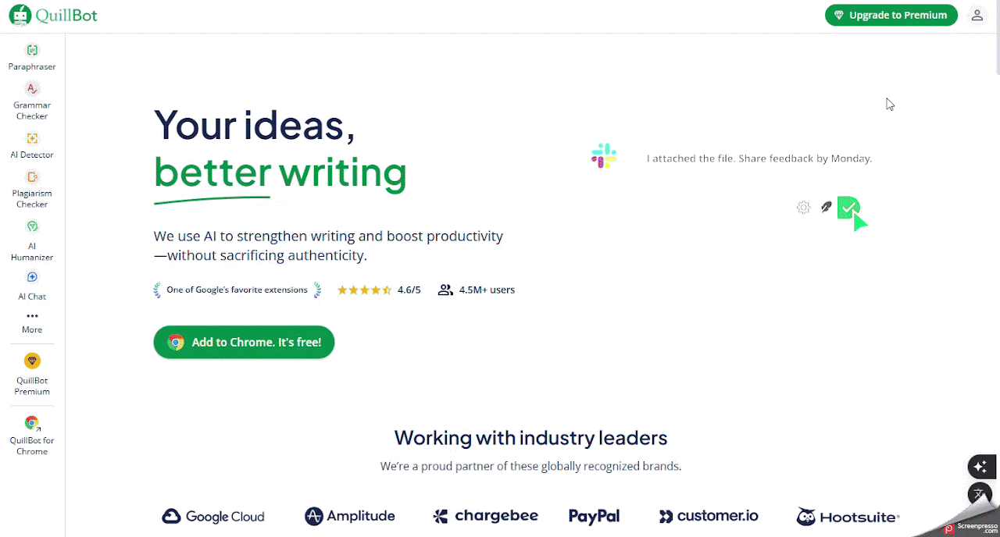

QuillBot
Auxiliar o professor na reformulação de textos, correção gramatical e verificação de plágio, facilitando a criação de materiais didáticos e avaliações.
Ficha técnica
Visão geral
O que é o QuillBot?
O QuillBot é uma plataforma de escrita assistida por IA que ajuda usuários a melhorar a clareza, fluidez e qualidade de seus textos.
- Parafraseador: reescreve frases ou parágrafos mantendo o significado original.
- Corretor gramatical: identifica e corrige erros gramaticais, ortográficos e de pontuação.
- Resumidor de textos: gera resumos concisos de textos longos.
- Tradutor: traduz textos entre diversos idiomas.
- Gerador de citações: cria referências bibliográficas em estilos como APA, MLA e Chicago.
A ferramenta está disponível em português e pode ser acessada diretamente pelo navegador.
Fluxo de uso
Como utilizar o QuillBot
Etapa 1
Acessando o QuillBot
- Acesse o site oficial: https://quillbot.com/pt-BR.
- Crie uma conta gratuita.
- Clique em “Registrar-se” e insira seu e-mail ou utilize uma conta do Google para se cadastrar.
- Após o cadastro, entre na plataforma com suas credenciais para acessar todos os recursos disponíveis.

Etapa 2
Utilizando os recursos do QuillBot
1. Parafraseador
- Digite ou cole o texto que deseja parafrasear na caixa de entrada.
- Escolha o modo de parafraseamento que melhor se adapta às suas necessidades: Padrão, Fluidez, Formal, Acadêmico, Simples, Criativo, Expansivo ou Personalizado.
- Clique em “Parafrasear” e aguarde a reformulação do texto.
Dicas: os diferentes modos oferecem variações no estilo e complexidade do texto. Você pode ajustar o nível de sinônimos para controlar a quantidade de alterações no texto.
2. Corretor Gramatical
- Acesse a ferramenta de correção gramatical.
- Cole o texto que deseja revisar.
- O QuillBot identificará e sugerirá correções para erros gramaticais, ortográficos e de pontuação.
Dicas: utilize essa ferramenta para revisar trabalhos acadêmicos, e-mails profissionais e outros documentos importantes.
3. Resumidor de Textos
- Acesse a ferramenta de resumo.
- Cole o texto que deseja resumir.
- Escolha entre os modos de resumo em parágrafo ou com marcadores.
- Clique em “Resumir” para obter uma versão condensada do texto.
Dicas: ideal para resumir artigos, relatórios e textos longos de forma rápida.
4. Tradutor
- Acesse a ferramenta de tradução.
- Cole o texto que deseja traduzir.
- Selecione o idioma de origem e o idioma de destino.
- Clique em “Traduzir” para obter a versão no idioma desejado.
Dicas: suporta mais de 50 idiomas, incluindo português, inglês, espanhol, francês e alemão.
5. Gerador de Citações
- Acesse a ferramenta de geração de citações.
- Escolha o estilo de citação desejado: APA, MLA, Chicago, entre outros.
- Insira as informações da fonte e clique em “Gerar Citação”.
Dicas: você pode copiar a citação gerada ou exportá-la para um documento. Ideal para trabalhos acadêmicos e pesquisas.

Boas práticas
Dicas adicionais
- Os modos de parafraseamento permitem adequar o texto a diferentes níveis de formalidade e complexidade.
- O corretor gramatical pode apoiar a revisão de materiais didáticos, avaliações e comunicações profissionais.
- O gerador de citações é útil para trabalhos acadêmicos e pesquisas.